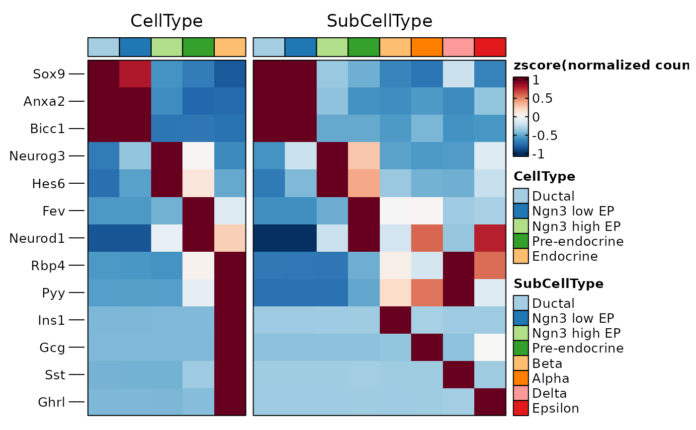
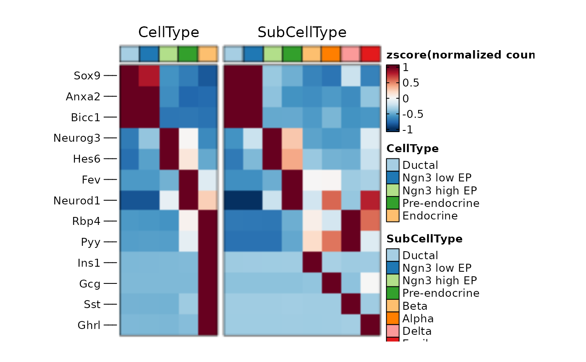
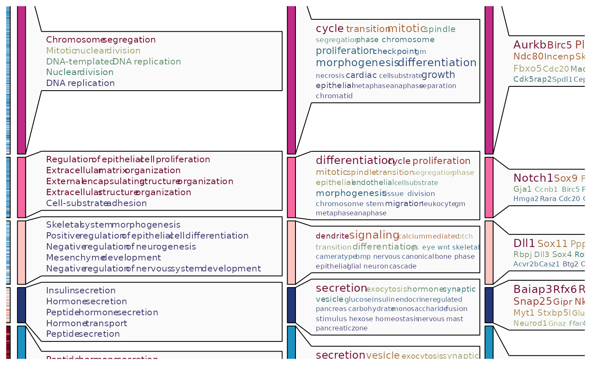
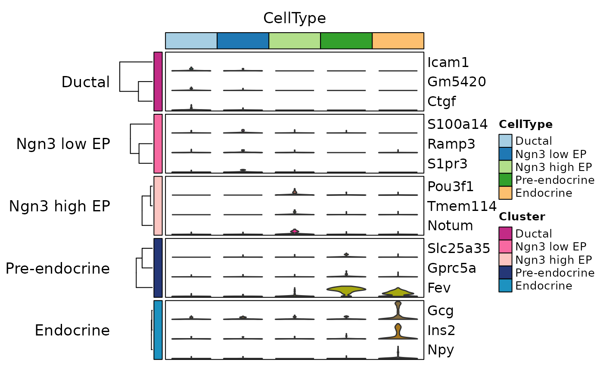
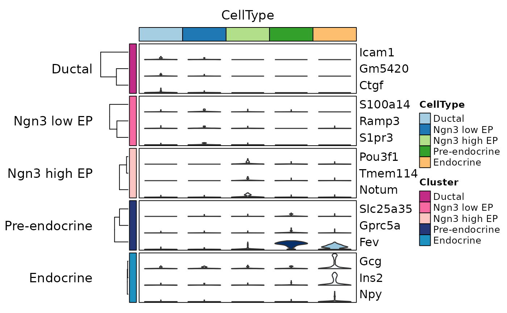
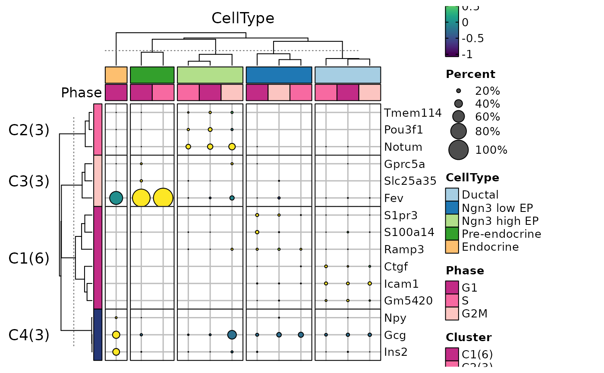
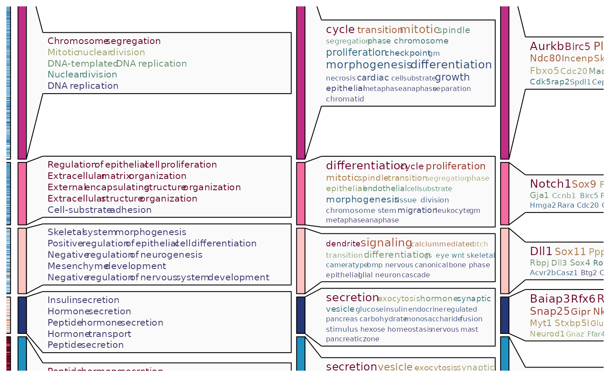
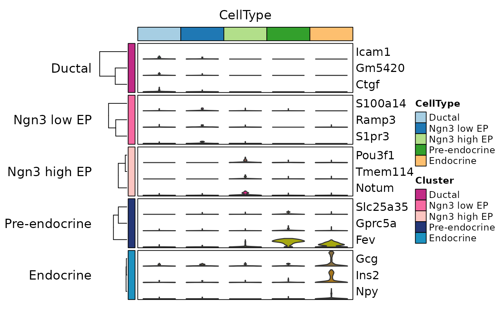
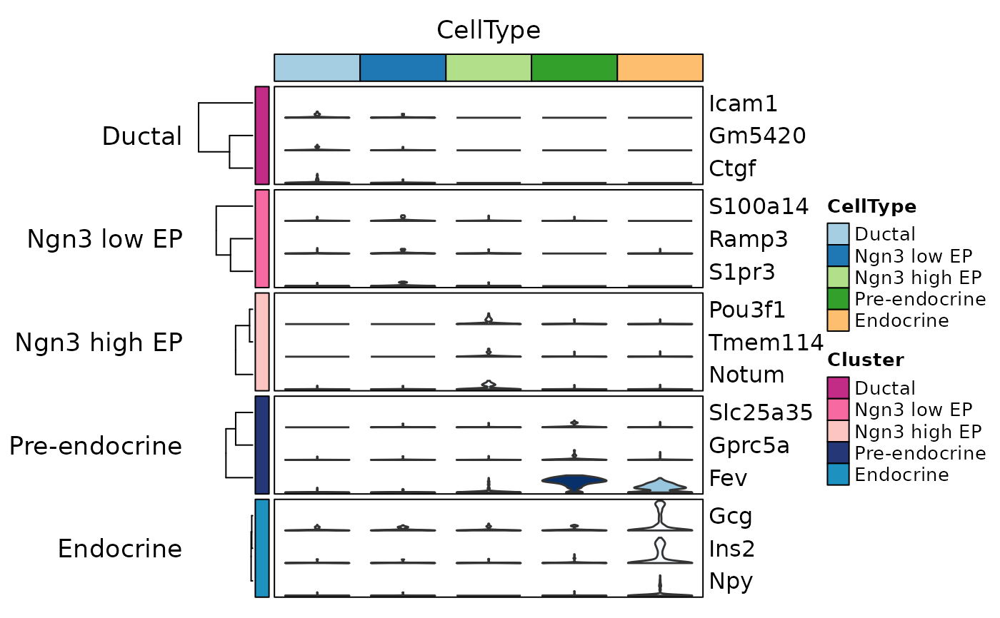
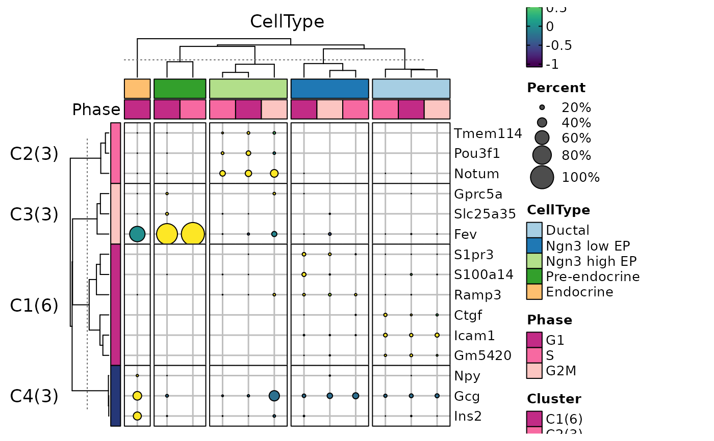

GroupHeatmap
Usage
GroupHeatmap(
srt,
features = NULL,
group.by = NULL,
split.by = NULL,
within_groups = FALSE,
grouping.var = NULL,
numerator = NULL,
cells = NULL,
aggregate_fun = base::mean,
exp_cutoff = 0,
border = TRUE,
flip = FALSE,
slot = "counts",
assay = NULL,
exp_method = c("zscore", "raw", "fc", "log2fc", "log1p"),
exp_legend_title = NULL,
limits = NULL,
lib_normalize = identical(slot, "counts"),
libsize = NULL,
feature_split = NULL,
feature_split_by = NULL,
n_split = NULL,
split_order = NULL,
split_method = c("kmeans", "hclust", "mfuzz"),
decreasing = FALSE,
fuzzification = NULL,
cluster_features_by = NULL,
cluster_rows = FALSE,
cluster_columns = FALSE,
cluster_row_slices = FALSE,
cluster_column_slices = FALSE,
show_row_names = FALSE,
show_column_names = FALSE,
row_names_side = ifelse(flip, "left", "right"),
column_names_side = ifelse(flip, "bottom", "top"),
row_names_rot = 0,
column_names_rot = 90,
row_title = NULL,
column_title = NULL,
row_title_side = "left",
column_title_side = "top",
row_title_rot = 0,
column_title_rot = ifelse(flip, 90, 0),
anno_terms = FALSE,
anno_keys = FALSE,
anno_features = FALSE,
terms_width = unit(4, "in"),
terms_fontsize = 8,
keys_width = unit(2, "in"),
keys_fontsize = c(6, 10),
features_width = unit(2, "in"),
features_fontsize = c(6, 10),
IDtype = "symbol",
species = "Homo_sapiens",
db_update = FALSE,
db_version = "latest",
db_combine = FALSE,
convert_species = FALSE,
Ensembl_version = 103,
mirror = NULL,
db = "GO_BP",
TERM2GENE = NULL,
TERM2NAME = NULL,
minGSSize = 10,
maxGSSize = 500,
GO_simplify = FALSE,
GO_simplify_cutoff = "p.adjust < 0.05",
simplify_method = "Wang",
simplify_similarityCutoff = 0.7,
pvalueCutoff = NULL,
padjustCutoff = 0.05,
topTerm = 5,
show_termid = FALSE,
topWord = 20,
words_excluded = NULL,
nlabel = 20,
features_label = NULL,
label_size = 10,
label_color = "black",
add_bg = FALSE,
bg_alpha = 0.5,
add_dot = FALSE,
dot_size = unit(8, "mm"),
add_reticle = FALSE,
reticle_color = "grey",
add_violin = FALSE,
fill.by = "feature",
fill_palette = "Dark2",
fill_palcolor = NULL,
heatmap_palette = "RdBu",
heatmap_palcolor = NULL,
group_palette = "Paired",
group_palcolor = NULL,
cell_split_palette = "simspec",
cell_split_palcolor = NULL,
feature_split_palette = "simspec",
feature_split_palcolor = NULL,
cell_annotation = NULL,
cell_annotation_palette = "Paired",
cell_annotation_palcolor = NULL,
cell_annotation_params = if (flip) list(width = unit(10, "mm")) else list(height =
unit(10, "mm")),
feature_annotation = NULL,
feature_annotation_palette = "Dark2",
feature_annotation_palcolor = NULL,
feature_annotation_params = if (flip) list(height = unit(5, "mm")) else list(width =
unit(5, "mm")),
use_raster = NULL,
raster_device = "png",
raster_by_magick = FALSE,
height = NULL,
width = NULL,
units = "inch",
seed = 11,
ht_params = list()
)Arguments
- srt
A Seurat object.
- features
The features to include in the heatmap.
- group.by
A character vector specifying the groups to group by. Default is NULL.
- split.by
A character vector specifying the variable to split the heatmap by. Default is NULL.
- within_groups
A logical value indicating whether to create separate heatmap scales for each group or within each group. Default is FALSE.
- grouping.var
A character vector that specifies another variable for grouping, such as certain conditions. The default value is NULL.
- numerator
A character vector specifying the value to use as the numerator in the grouping.var grouping. Default is NULL.
- cells
A character vector specifying the cells to include in the heatmap. Default is NULL.
- aggregate_fun
A function to use for aggregating data within groups. Default is base::mean.
- exp_cutoff
A numeric value specifying the threshold for cell counting if
add_dotis TRUE. Default is 0.- border
A logical value indicating whether to add a border to the heatmap. Default is TRUE.
- flip
A logical value indicating whether to flip the heatmap. Default is FALSE.
- slot
A character vector specifying the slot in the Seurat object to use. Default is "counts".
- assay
A character vector specifying the assay in the Seurat object to use. Default is NULL.
- exp_method
A character vector specifying the method for calculating expression values. Default is "zscore" with options "zscore", "raw", "fc", "log2fc", "log1p".
- exp_legend_title
A character vector specifying the title for the legend of expression value. Default is NULL.
- limits
A two-length numeric vector specifying the limits for the color scale. Default is NULL.
- lib_normalize
A logical value indicating whether to normalize the data by library size.
- libsize
A numeric vector specifying the library size for each cell. Default is NULL.
- feature_split
A factor specifying how to split the features. Default is NULL.
- feature_split_by
A character vector specifying which group.by to use when splitting features (into n_split feature clusters). Default is NULL.
- n_split
An integer specifying the number of feature splits (feature clusters) to create. Default is NULL.
- split_order
A numeric vector specifying the order of splits. Default is NULL.
- split_method
A character vector specifying the method for splitting features. Default is "kmeans" with options "kmeans", "hclust", "mfuzz").
- decreasing
A logical value indicating whether to sort feature splits in decreasing order. Default is FALSE.
- fuzzification
A numeric value specifying the fuzzification coefficient. Default is NULL.
- cluster_features_by
A character vector specifying which group.by to use when clustering features. Default is NULL. By default, this parameter is set to NULL, which means that all groups will be used.
- cluster_rows
A logical value indicating whether to cluster rows in the heatmap. Default is FALSE.
- cluster_columns
A logical value indicating whether to cluster columns in the heatmap. Default is FALSE.
- cluster_row_slices
A logical value indicating whether to cluster row slices in the heatmap. Default is FALSE.
- cluster_column_slices
A logical value indicating whether to cluster column slices in the heatmap. Default is FALSE.
- show_row_names
A logical value indicating whether to show row names in the heatmap. Default is FALSE.
- show_column_names
A logical value indicating whether to show column names in the heatmap. Default is FALSE.
- row_names_side
A character vector specifying the side to place row names.
- column_names_side
A character vector specifying the side to place column names.
- row_names_rot
A numeric value specifying the rotation angle for row names. Default is 0.
- column_names_rot
A numeric value specifying the rotation angle for column names. Default is 90.
- row_title
A character vector specifying the title for rows. Default is NULL.
- column_title
A character vector specifying the title for columns. Default is NULL.
- row_title_side
A character vector specifying the side to place row title. Default is "left".
- column_title_side
A character vector specifying the side to place column title. Default is "top".
- row_title_rot
A numeric value specifying the rotation angle for row title. Default is 0.
- column_title_rot
A numeric value specifying the rotation angle for column title.
- anno_terms
A logical value indicating whether to include term annotations. Default is FALSE.
- anno_keys
A logical value indicating whether to include key annotations. Default is FALSE.
- anno_features
A logical value indicating whether to include feature annotations. Default is FALSE.
- terms_width
A unit specifying the width of term annotations. Default is unit(4, "in").
- terms_fontsize
A numeric vector specifying the font size(s) for term annotations. Default is 8.
- keys_width
A unit specifying the width of key annotations. Default is unit(2, "in").
- keys_fontsize
A two-length numeric vector specifying the minimum and maximum font size(s) for key annotations. Default is c(6, 10).
- features_width
A unit specifying the width of feature annotations. Default is unit(2, "in").
- features_fontsize
A two-length numeric vector specifying the minimum and maximum font size(s) for feature annotations. Default is c(6, 10).
- IDtype
A character vector specifying the type of IDs for features. Default is "symbol".
- species
A character vector specifying the species for features. Default is "Homo_sapiens".
- db_update
A logical value indicating whether to update the database. Default is FALSE.
- db_version
A character vector specifying the version of the database. Default is "latest".
- db_combine
A logical value indicating whether to use a combined database. Default is FALSE.
- convert_species
A logical value indicating whether to use a species-converted database if annotation is missing for
species. Default is FALSE.- Ensembl_version
An integer specifying the Ensembl version. Default is 103.
- mirror
A character vector specifying the mirror for the Ensembl database. Default is NULL.
- db
A character vector specifying the database to use. Default is "GO_BP".
- TERM2GENE
A data.frame specifying the TERM2GENE mapping for the database. Default is NULL.
- TERM2NAME
A data.frame specifying the TERM2NAME mapping for the database. Default is NULL.
- minGSSize
An integer specifying the minimum gene set size for the database. Default is 10.
- maxGSSize
An integer specifying the maximum gene set size for the database. Default is 500.
- GO_simplify
A logical value indicating whether to simplify gene ontology terms. Default is FALSE.
- GO_simplify_cutoff
A character vector specifying the cutoff for GO simplification. Default is "p.adjust < 0.05".
- simplify_method
A character vector specifying the method for GO simplification. Default is "Wang".
- simplify_similarityCutoff
A numeric value specifying the similarity cutoff for GO simplification. Default is 0.7.
- pvalueCutoff
A numeric vector specifying the p-value cutoff(s) for significance. Default is NULL.
- padjustCutoff
A numeric value specifying the adjusted p-value cutoff for significance. Default is 0.05.
- topTerm
An integer specifying the number of top terms to include. Default is 5.
- show_termid
A logical value indicating whether to show term IDs. Default is FALSE.
- topWord
An integer specifying the number of top words to include. Default is 20.
- words_excluded
A character vector specifying the words to exclude. Default is NULL.
- nlabel
An integer specifying the number of labels to include. Default is 0.
- features_label
A character vector specifying the features to label. Default is NULL.
- label_size
A numeric value specifying the size of labels. Default is 10.
- label_color
A character vector specifying the color of labels. Default is "black".
- add_bg
A logical value indicating whether to add a background to the heatmap. Default is FALSE.
- bg_alpha
A numeric value specifying the alpha value for the background color. Default is 0.5.
- add_dot
A logical value indicating whether to add dots to the heatmap. The size of dot represents percentage of expressed cells based on the specified
exp_cutoff. Default is FALSE.- dot_size
A unit specifying the base size of the dots. Default is unit(8, "mm").
- add_reticle
A logical value indicating whether to add reticles to the heatmap. Default is FALSE.
- reticle_color
A character vector specifying the color of the reticles. Default is "grey".
- add_violin
A logical value indicating whether to add violins to the heatmap. Default is FALSE.
- fill.by
A character vector specifying what to fill the violin. Possible values are "group", "feature", or "expression". Default is "feature".
- fill_palette
A character vector specifying the palette to use for fill. Default is "Dark2".
- fill_palcolor
A character vector specifying the fill color to use. Default is NULL.
- heatmap_palette
A character vector specifying the palette to use for the heatmap. Default is "RdBu".
- heatmap_palcolor
A character vector specifying the heatmap color to use. Default is NULL.
- group_palette
A character vector specifying the palette to use for groups. Default is "Paired".
- group_palcolor
A character vector specifying the group color to use. Default is NULL.
- cell_split_palette
A character vector specifying the palette to use for cell splits. Default is "simspec".
- cell_split_palcolor
A character vector specifying the cell split color to use. Default is NULL.
- feature_split_palette
A character vector specifying the palette to use for feature splits. Default is "simspec".
- feature_split_palcolor
A character vector specifying the feature split color to use. Default is NULL.
- cell_annotation
A character vector specifying the cell annotation(s) to include. Default is NULL.
- cell_annotation_palette
A character vector specifying the palette to use for cell annotations. The length of the vector should match the number of cell_annotation. Default is "Paired".
- cell_annotation_palcolor
A list of character vector specifying the cell annotation color(s) to use. The length of the list should match the number of cell_annotation. Default is NULL.
- cell_annotation_params
A list specifying additional parameters for cell annotations. Default is a list with width = unit(1, "cm") if flip is TRUE, else a list with height = unit(1, "cm").
- feature_annotation
A character vector specifying the feature annotation(s) to include. Default is NULL.
- feature_annotation_palette
A character vector specifying the palette to use for feature annotations. The length of the vector should match the number of feature_annotation. Default is "Dark2".
- feature_annotation_palcolor
A list of character vector specifying the feature annotation color to use. The length of the list should match the number of feature_annotation. Default is NULL.
- feature_annotation_params
A list specifying additional parameters for feature annotations. Default is an empty list.
- use_raster
A logical value indicating whether to use a raster device for plotting. Default is NULL.
- raster_device
A character vector specifying the raster device to use. Default is "png".
- raster_by_magick
A logical value indicating whether to use the 'magick' package for raster. Default is FALSE.
- height
A numeric vector specifying the height(s) of the heatmap body. Default is NULL.
- width
A numeric vector specifying the width(s) of the heatmap body. Default is NULL.
- units
A character vector specifying the units for the height and width. Default is "inch".
- seed
An integer specifying the random seed. Default is 11.
- ht_params
A list specifying additional parameters passed to the ComplexHeatmap::Heatmap function. Default is an empty list.
Value
A list with the following elements:
plotThe heatmap plot.matrix_listA list of matrix for eachgroup.byused in the heatmap.feature_splitNULL or a factor if splitting is performed in the heatmap.cell_metadataMeta data of cells used to generate the heatmap.cell_metadataMeta data of features used to generate the heatmap.enrichmentNULL or a enrichment result generated by RunEnrichment when any of the parametersanno_terms,anno_keys, oranno_featuresis set to TRUE.
Examples
library(dplyr)
data("pancreas_sub")
ht1 <- GroupHeatmap(pancreas_sub,
features = c(
"Sox9", "Anxa2", "Bicc1", # Ductal
"Neurog3", "Hes6", # EPs
"Fev", "Neurod1", # Pre-endocrine
"Rbp4", "Pyy", # Endocrine
"Ins1", "Gcg", "Sst", "Ghrl" # Beta, Alpha, Delta, Epsilon
),
group.by = c("CellType", "SubCellType")
)
#> 'magick' package is suggested to install to give better rasterization.
#>
#> Set `ht_opt$message = FALSE` to turn off this message.
ht1$plot

panel_fix(ht1$plot, height = 4, width = 6, raster = TRUE, dpi = 50)

pancreas_sub <- RunDEtest(pancreas_sub, group_by = "CellType")
#> Warning: Data in the 'data' slot is raw counts. Perform NormalizeData(LogNormalize) on the data.
#> [2025-09-08 14:54:34.899311] Start DEtest
#> Workers: 2
#> Find all markers(wilcox) among 5 groups...
#>
|
| | 0%
|
|============================================ | 40%
|
|==============================================================================================================| 100%
#>
#> [2025-09-08 14:54:45.766467] DEtest done
#> Elapsed time:10.87 secs
de_filter <- filter(pancreas_sub@tools$DEtest_CellType$AllMarkers_wilcox, p_val_adj < 0.05 & avg_log2FC > 1)
ht2 <- GroupHeatmap(
srt = pancreas_sub, features = de_filter$gene, group.by = "CellType",
split.by = "Phase", cell_split_palette = "Dark2",
cluster_rows = TRUE, cluster_columns = TRUE
)
#> 'magick' package is suggested to install to give better rasterization.
#>
#> Set `ht_opt$message = FALSE` to turn off this message.
#> `use_raster` is automatically set to TRUE for a matrix with more than 2000 rows. You can control
#> `use_raster` argument by explicitly setting TRUE/FALSE to it.
#>
#> Set `ht_opt$message = FALSE` to turn off this message.
ht2$plot
 ht3 <- GroupHeatmap(
srt = pancreas_sub, features = de_filter$gene, feature_split = de_filter$group1, group.by = "CellType",
species = "Mus_musculus", db = "GO_BP", anno_terms = TRUE, anno_keys = TRUE, anno_features = TRUE
)
#> 'magick' package is suggested to install to give better rasterization.
#>
#> Set `ht_opt$message = FALSE` to turn off this message.
#> [2025-09-08 14:54:59.749512] Start Enrichment
#> Workers: 2
#> Species: Mus_musculus
#> Loading cached db: GO_BP version:3.21.0 nterm:15445 created:2025-09-08 14:39:41.899104
#> Permform enrichment...
#>
|
| | 0%
|
|============================================ | 40%
|
|==============================================================================================================| 100%
#>
#> [2025-09-08 14:55:54.921348] Enrichment done
#> Elapsed time:55.17 secs
#>
#> The size of the heatmap is fixed because certain elements are not scalable.
#> The width and height of the heatmap are determined by the size of the current viewport.
#> If you want to have more control over the size, you can manually set the parameters 'width' and 'height'.
ht3$plot

pancreas_sub <- AnnotateFeatures(pancreas_sub, species = "Mus_musculus", db = c("TF", "CSPA"))
#> Species: Mus_musculus
#> Loading cached db: TF version:AnimalTFDB3 nterm:2 created:2025-09-08 14:32:44.179981
#> Preparing database: CSPA
#> Error in download.file(url, destfile = destfile, method = method, quiet = quiet, ...): cannot open URL 'https://wlab.ethz.ch/cspa/data/S1_File.xlsx'
de_top <- de_filter %>%
group_by(gene) %>%
top_n(1, avg_log2FC) %>%
group_by(group1) %>%
top_n(3, avg_log2FC)
ht4 <- GroupHeatmap(pancreas_sub,
features = de_top$gene, feature_split = de_top$group1, group.by = "CellType",
heatmap_palette = "YlOrRd",
cell_annotation = c("Phase", "G2M_score", "Neurod2"), cell_annotation_palette = c("Dark2", "Paired", "Paired"),
cell_annotation_params = list(height = unit(10, "mm")),
feature_annotation = c("TF", "CSPA"),
feature_annotation_palcolor = list(c("gold", "steelblue"), c("forestgreen")),
add_dot = TRUE, add_bg = TRUE, nlabel = 0, show_row_names = TRUE
)
#> Error in GroupHeatmap(pancreas_sub, features = de_top$gene, feature_split = de_top$group1, group.by = "CellType", heatmap_palette = "YlOrRd", cell_annotation = c("Phase", "G2M_score", "Neurod2"), cell_annotation_palette = c("Dark2", "Paired", "Paired"), cell_annotation_params = list(height = unit(10, "mm")), feature_annotation = c("TF", "CSPA"), feature_annotation_palcolor = list(c("gold", "steelblue"), c("forestgreen")), add_dot = TRUE, add_bg = TRUE, nlabel = 0, show_row_names = TRUE): feature_annotation: TF,CSPA is not in the meta data of the RNA assay in the Seurat object.
ht4$plot
#> Error: object 'ht4' not found
ht5 <- GroupHeatmap(pancreas_sub,
features = de_top$gene, feature_split = de_top$group1, group.by = "CellType",
heatmap_palette = "YlOrRd",
cell_annotation = c("Phase", "G2M_score", "Neurod2"), cell_annotation_palette = c("Dark2", "Paired", "Paired"),
cell_annotation_params = list(width = unit(10, "mm")),
feature_annotation = c("TF", "CSPA"),
feature_annotation_palcolor = list(c("gold", "steelblue"), c("forestgreen")),
add_dot = TRUE, add_bg = TRUE,
flip = TRUE, column_title_rot = 45, nlabel = 0, show_row_names = TRUE
)
#> Error in GroupHeatmap(pancreas_sub, features = de_top$gene, feature_split = de_top$group1, group.by = "CellType", heatmap_palette = "YlOrRd", cell_annotation = c("Phase", "G2M_score", "Neurod2"), cell_annotation_palette = c("Dark2", "Paired", "Paired"), cell_annotation_params = list(width = unit(10, "mm")), feature_annotation = c("TF", "CSPA"), feature_annotation_palcolor = list(c("gold", "steelblue"), c("forestgreen")), add_dot = TRUE, add_bg = TRUE, flip = TRUE, column_title_rot = 45, nlabel = 0, show_row_names = TRUE): feature_annotation: TF,CSPA is not in the meta data of the RNA assay in the Seurat object.
ht5$plot
#> Error: object 'ht5' not found
ht6 <- GroupHeatmap(pancreas_sub,
features = de_top$gene, feature_split = de_top$group1, group.by = "CellType",
add_violin = TRUE, cluster_rows = TRUE,
nlabel = 0, show_row_names = TRUE
)
#> 'magick' package is suggested to install to give better rasterization.
#>
#> Set `ht_opt$message = FALSE` to turn off this message.
#> Warning: No shared levels found between `names(values)` of the manual scale and the data's colour values.
#> Warning: No shared levels found between `names(values)` of the manual scale and the data's colour values.
#> Warning: No shared levels found between `names(values)` of the manual scale and the data's colour values.
#> Warning: No shared levels found between `names(values)` of the manual scale and the data's colour values.
#> Warning: No shared levels found between `names(values)` of the manual scale and the data's colour values.
#> Warning: No shared levels found between `names(values)` of the manual scale and the data's colour values.
#> Warning: No shared levels found between `names(values)` of the manual scale and the data's colour values.
#> Warning: No shared levels found between `names(values)` of the manual scale and the data's colour values.
#> Warning: No shared levels found between `names(values)` of the manual scale and the data's colour values.
#> Warning: No shared levels found between `names(values)` of the manual scale and the data's colour values.
#> Warning: No shared levels found between `names(values)` of the manual scale and the data's colour values.
#> Warning: No shared levels found between `names(values)` of the manual scale and the data's colour values.
#> Warning: No shared levels found between `names(values)` of the manual scale and the data's colour values.
#> Warning: No shared levels found between `names(values)` of the manual scale and the data's colour values.
#> Warning: No shared levels found between `names(values)` of the manual scale and the data's colour values.
#> Warning: No shared levels found between `names(values)` of the manual scale and the data's colour values.
#> Warning: No shared levels found between `names(values)` of the manual scale and the data's colour values.
#> Warning: No shared levels found between `names(values)` of the manual scale and the data's colour values.
#> Warning: No shared levels found between `names(values)` of the manual scale and the data's colour values.
#> Warning: No shared levels found between `names(values)` of the manual scale and the data's colour values.
#> Warning: No shared levels found between `names(values)` of the manual scale and the data's colour values.
#> Warning: No shared levels found between `names(values)` of the manual scale and the data's colour values.
#> Warning: No shared levels found between `names(values)` of the manual scale and the data's colour values.
#> Warning: No shared levels found between `names(values)` of the manual scale and the data's colour values.
#> Warning: No shared levels found between `names(values)` of the manual scale and the data's colour values.
#> Warning: No shared levels found between `names(values)` of the manual scale and the data's colour values.
#> Warning: No shared levels found between `names(values)` of the manual scale and the data's colour values.
#> Warning: No shared levels found between `names(values)` of the manual scale and the data's colour values.
#> Warning: No shared levels found between `names(values)` of the manual scale and the data's colour values.
#> Warning: No shared levels found between `names(values)` of the manual scale and the data's colour values.
#> Warning: No shared levels found between `names(values)` of the manual scale and the data's colour values.
#> Warning: No shared levels found between `names(values)` of the manual scale and the data's colour values.
#> Warning: No shared levels found between `names(values)` of the manual scale and the data's colour values.
#> Warning: No shared levels found between `names(values)` of the manual scale and the data's colour values.
#> Warning: No shared levels found between `names(values)` of the manual scale and the data's colour values.
#> Warning: No shared levels found between `names(values)` of the manual scale and the data's colour values.
#> Warning: No shared levels found between `names(values)` of the manual scale and the data's colour values.
#> Warning: No shared levels found between `names(values)` of the manual scale and the data's colour values.
#> Warning: No shared levels found between `names(values)` of the manual scale and the data's colour values.
#> Warning: No shared levels found between `names(values)` of the manual scale and the data's colour values.
#> Warning: No shared levels found between `names(values)` of the manual scale and the data's colour values.
#> Warning: No shared levels found between `names(values)` of the manual scale and the data's colour values.
#> Warning: No shared levels found between `names(values)` of the manual scale and the data's colour values.
#> Warning: No shared levels found between `names(values)` of the manual scale and the data's colour values.
#> Warning: No shared levels found between `names(values)` of the manual scale and the data's colour values.
#> Warning: No shared levels found between `names(values)` of the manual scale and the data's colour values.
#> Warning: No shared levels found between `names(values)` of the manual scale and the data's colour values.
#> Warning: No shared levels found between `names(values)` of the manual scale and the data's colour values.
#> Warning: No shared levels found between `names(values)` of the manual scale and the data's colour values.
#> Warning: No shared levels found between `names(values)` of the manual scale and the data's colour values.
#> Warning: No shared levels found between `names(values)` of the manual scale and the data's colour values.
#> Warning: No shared levels found between `names(values)` of the manual scale and the data's colour values.
#> Warning: No shared levels found between `names(values)` of the manual scale and the data's colour values.
#> Warning: No shared levels found between `names(values)` of the manual scale and the data's colour values.
#> Warning: No shared levels found between `names(values)` of the manual scale and the data's colour values.
#> Warning: No shared levels found between `names(values)` of the manual scale and the data's colour values.
#> Warning: No shared levels found between `names(values)` of the manual scale and the data's colour values.
#> Warning: No shared levels found between `names(values)` of the manual scale and the data's colour values.
#> Warning: No shared levels found between `names(values)` of the manual scale and the data's colour values.
#> Warning: No shared levels found between `names(values)` of the manual scale and the data's colour values.
#> Warning: No shared levels found between `names(values)` of the manual scale and the data's colour values.
#> Warning: No shared levels found between `names(values)` of the manual scale and the data's colour values.
#> Warning: No shared levels found between `names(values)` of the manual scale and the data's colour values.
#> Warning: No shared levels found between `names(values)` of the manual scale and the data's colour values.
#> Warning: No shared levels found between `names(values)` of the manual scale and the data's colour values.
#> Warning: No shared levels found between `names(values)` of the manual scale and the data's colour values.
#> Warning: No shared levels found between `names(values)` of the manual scale and the data's colour values.
#> Warning: No shared levels found between `names(values)` of the manual scale and the data's colour values.
#> Warning: No shared levels found between `names(values)` of the manual scale and the data's colour values.
#> Warning: No shared levels found between `names(values)` of the manual scale and the data's colour values.
#> Warning: No shared levels found between `names(values)` of the manual scale and the data's colour values.
#> Warning: No shared levels found between `names(values)` of the manual scale and the data's colour values.
#> Warning: No shared levels found between `names(values)` of the manual scale and the data's colour values.
#> Warning: No shared levels found between `names(values)` of the manual scale and the data's colour values.
#> Warning: No shared levels found between `names(values)` of the manual scale and the data's colour values.
ht6$plot

ht7 <- GroupHeatmap(pancreas_sub,
features = de_top$gene, feature_split = de_top$group1, group.by = "CellType",
add_violin = TRUE, fill.by = "expression", fill_palette = "Blues", cluster_rows = TRUE,
nlabel = 0, show_row_names = TRUE
)
#> 'magick' package is suggested to install to give better rasterization.
#>
#> Set `ht_opt$message = FALSE` to turn off this message.
ht7$plot

ht8 <- GroupHeatmap(pancreas_sub,
features = de_top$gene, group.by = "CellType", split.by = "Phase", n_split = 4,
cluster_rows = TRUE, cluster_columns = TRUE, cluster_row_slices = TRUE, cluster_column_slices = TRUE,
add_dot = TRUE, add_reticle = TRUE, heatmap_palette = "viridis",
nlabel = 0, show_row_names = TRUE,
ht_params = list(row_gap = unit(0, "mm"), row_names_gp = gpar(fontsize = 10))
)
#> 'magick' package is suggested to install to give better rasterization.
#>
#> Set `ht_opt$message = FALSE` to turn off this message.
ht8$plot

ht3 <- GroupHeatmap(
srt = pancreas_sub, features = de_filter$gene, feature_split = de_filter$group1, group.by = "CellType",
species = "Mus_musculus", db = "GO_BP", anno_terms = TRUE, anno_keys = TRUE, anno_features = TRUE
)
#> 'magick' package is suggested to install to give better rasterization.
#>
#> Set `ht_opt$message = FALSE` to turn off this message.
#> [2025-09-08 14:54:59.749512] Start Enrichment
#> Workers: 2
#> Species: Mus_musculus
#> Loading cached db: GO_BP version:3.21.0 nterm:15445 created:2025-09-08 14:39:41.899104
#> Permform enrichment...
#>
|
| | 0%
|
|============================================ | 40%
|
|==============================================================================================================| 100%
#>
#> [2025-09-08 14:55:54.921348] Enrichment done
#> Elapsed time:55.17 secs
#>
#> The size of the heatmap is fixed because certain elements are not scalable.
#> The width and height of the heatmap are determined by the size of the current viewport.
#> If you want to have more control over the size, you can manually set the parameters 'width' and 'height'.
ht3$plot

pancreas_sub <- AnnotateFeatures(pancreas_sub, species = "Mus_musculus", db = c("TF", "CSPA"))
#> Species: Mus_musculus
#> Loading cached db: TF version:AnimalTFDB3 nterm:2 created:2025-09-08 14:32:44.179981
#> Preparing database: CSPA
#> Error in download.file(url, destfile = destfile, method = method, quiet = quiet, ...): cannot open URL 'https://wlab.ethz.ch/cspa/data/S1_File.xlsx'
de_top <- de_filter %>%
group_by(gene) %>%
top_n(1, avg_log2FC) %>%
group_by(group1) %>%
top_n(3, avg_log2FC)
ht4 <- GroupHeatmap(pancreas_sub,
features = de_top$gene, feature_split = de_top$group1, group.by = "CellType",
heatmap_palette = "YlOrRd",
cell_annotation = c("Phase", "G2M_score", "Neurod2"), cell_annotation_palette = c("Dark2", "Paired", "Paired"),
cell_annotation_params = list(height = unit(10, "mm")),
feature_annotation = c("TF", "CSPA"),
feature_annotation_palcolor = list(c("gold", "steelblue"), c("forestgreen")),
add_dot = TRUE, add_bg = TRUE, nlabel = 0, show_row_names = TRUE
)
#> Error in GroupHeatmap(pancreas_sub, features = de_top$gene, feature_split = de_top$group1, group.by = "CellType", heatmap_palette = "YlOrRd", cell_annotation = c("Phase", "G2M_score", "Neurod2"), cell_annotation_palette = c("Dark2", "Paired", "Paired"), cell_annotation_params = list(height = unit(10, "mm")), feature_annotation = c("TF", "CSPA"), feature_annotation_palcolor = list(c("gold", "steelblue"), c("forestgreen")), add_dot = TRUE, add_bg = TRUE, nlabel = 0, show_row_names = TRUE): feature_annotation: TF,CSPA is not in the meta data of the RNA assay in the Seurat object.
ht4$plot
#> Error: object 'ht4' not found
ht5 <- GroupHeatmap(pancreas_sub,
features = de_top$gene, feature_split = de_top$group1, group.by = "CellType",
heatmap_palette = "YlOrRd",
cell_annotation = c("Phase", "G2M_score", "Neurod2"), cell_annotation_palette = c("Dark2", "Paired", "Paired"),
cell_annotation_params = list(width = unit(10, "mm")),
feature_annotation = c("TF", "CSPA"),
feature_annotation_palcolor = list(c("gold", "steelblue"), c("forestgreen")),
add_dot = TRUE, add_bg = TRUE,
flip = TRUE, column_title_rot = 45, nlabel = 0, show_row_names = TRUE
)
#> Error in GroupHeatmap(pancreas_sub, features = de_top$gene, feature_split = de_top$group1, group.by = "CellType", heatmap_palette = "YlOrRd", cell_annotation = c("Phase", "G2M_score", "Neurod2"), cell_annotation_palette = c("Dark2", "Paired", "Paired"), cell_annotation_params = list(width = unit(10, "mm")), feature_annotation = c("TF", "CSPA"), feature_annotation_palcolor = list(c("gold", "steelblue"), c("forestgreen")), add_dot = TRUE, add_bg = TRUE, flip = TRUE, column_title_rot = 45, nlabel = 0, show_row_names = TRUE): feature_annotation: TF,CSPA is not in the meta data of the RNA assay in the Seurat object.
ht5$plot
#> Error: object 'ht5' not found
ht6 <- GroupHeatmap(pancreas_sub,
features = de_top$gene, feature_split = de_top$group1, group.by = "CellType",
add_violin = TRUE, cluster_rows = TRUE,
nlabel = 0, show_row_names = TRUE
)
#> 'magick' package is suggested to install to give better rasterization.
#>
#> Set `ht_opt$message = FALSE` to turn off this message.
#> Warning: No shared levels found between `names(values)` of the manual scale and the data's colour values.
#> Warning: No shared levels found between `names(values)` of the manual scale and the data's colour values.
#> Warning: No shared levels found between `names(values)` of the manual scale and the data's colour values.
#> Warning: No shared levels found between `names(values)` of the manual scale and the data's colour values.
#> Warning: No shared levels found between `names(values)` of the manual scale and the data's colour values.
#> Warning: No shared levels found between `names(values)` of the manual scale and the data's colour values.
#> Warning: No shared levels found between `names(values)` of the manual scale and the data's colour values.
#> Warning: No shared levels found between `names(values)` of the manual scale and the data's colour values.
#> Warning: No shared levels found between `names(values)` of the manual scale and the data's colour values.
#> Warning: No shared levels found between `names(values)` of the manual scale and the data's colour values.
#> Warning: No shared levels found between `names(values)` of the manual scale and the data's colour values.
#> Warning: No shared levels found between `names(values)` of the manual scale and the data's colour values.
#> Warning: No shared levels found between `names(values)` of the manual scale and the data's colour values.
#> Warning: No shared levels found between `names(values)` of the manual scale and the data's colour values.
#> Warning: No shared levels found between `names(values)` of the manual scale and the data's colour values.
#> Warning: No shared levels found between `names(values)` of the manual scale and the data's colour values.
#> Warning: No shared levels found between `names(values)` of the manual scale and the data's colour values.
#> Warning: No shared levels found between `names(values)` of the manual scale and the data's colour values.
#> Warning: No shared levels found between `names(values)` of the manual scale and the data's colour values.
#> Warning: No shared levels found between `names(values)` of the manual scale and the data's colour values.
#> Warning: No shared levels found between `names(values)` of the manual scale and the data's colour values.
#> Warning: No shared levels found between `names(values)` of the manual scale and the data's colour values.
#> Warning: No shared levels found between `names(values)` of the manual scale and the data's colour values.
#> Warning: No shared levels found between `names(values)` of the manual scale and the data's colour values.
#> Warning: No shared levels found between `names(values)` of the manual scale and the data's colour values.
#> Warning: No shared levels found between `names(values)` of the manual scale and the data's colour values.
#> Warning: No shared levels found between `names(values)` of the manual scale and the data's colour values.
#> Warning: No shared levels found between `names(values)` of the manual scale and the data's colour values.
#> Warning: No shared levels found between `names(values)` of the manual scale and the data's colour values.
#> Warning: No shared levels found between `names(values)` of the manual scale and the data's colour values.
#> Warning: No shared levels found between `names(values)` of the manual scale and the data's colour values.
#> Warning: No shared levels found between `names(values)` of the manual scale and the data's colour values.
#> Warning: No shared levels found between `names(values)` of the manual scale and the data's colour values.
#> Warning: No shared levels found between `names(values)` of the manual scale and the data's colour values.
#> Warning: No shared levels found between `names(values)` of the manual scale and the data's colour values.
#> Warning: No shared levels found between `names(values)` of the manual scale and the data's colour values.
#> Warning: No shared levels found between `names(values)` of the manual scale and the data's colour values.
#> Warning: No shared levels found between `names(values)` of the manual scale and the data's colour values.
#> Warning: No shared levels found between `names(values)` of the manual scale and the data's colour values.
#> Warning: No shared levels found between `names(values)` of the manual scale and the data's colour values.
#> Warning: No shared levels found between `names(values)` of the manual scale and the data's colour values.
#> Warning: No shared levels found between `names(values)` of the manual scale and the data's colour values.
#> Warning: No shared levels found between `names(values)` of the manual scale and the data's colour values.
#> Warning: No shared levels found between `names(values)` of the manual scale and the data's colour values.
#> Warning: No shared levels found between `names(values)` of the manual scale and the data's colour values.
#> Warning: No shared levels found between `names(values)` of the manual scale and the data's colour values.
#> Warning: No shared levels found between `names(values)` of the manual scale and the data's colour values.
#> Warning: No shared levels found between `names(values)` of the manual scale and the data's colour values.
#> Warning: No shared levels found between `names(values)` of the manual scale and the data's colour values.
#> Warning: No shared levels found between `names(values)` of the manual scale and the data's colour values.
#> Warning: No shared levels found between `names(values)` of the manual scale and the data's colour values.
#> Warning: No shared levels found between `names(values)` of the manual scale and the data's colour values.
#> Warning: No shared levels found between `names(values)` of the manual scale and the data's colour values.
#> Warning: No shared levels found between `names(values)` of the manual scale and the data's colour values.
#> Warning: No shared levels found between `names(values)` of the manual scale and the data's colour values.
#> Warning: No shared levels found between `names(values)` of the manual scale and the data's colour values.
#> Warning: No shared levels found between `names(values)` of the manual scale and the data's colour values.
#> Warning: No shared levels found between `names(values)` of the manual scale and the data's colour values.
#> Warning: No shared levels found between `names(values)` of the manual scale and the data's colour values.
#> Warning: No shared levels found between `names(values)` of the manual scale and the data's colour values.
#> Warning: No shared levels found between `names(values)` of the manual scale and the data's colour values.
#> Warning: No shared levels found between `names(values)` of the manual scale and the data's colour values.
#> Warning: No shared levels found between `names(values)` of the manual scale and the data's colour values.
#> Warning: No shared levels found between `names(values)` of the manual scale and the data's colour values.
#> Warning: No shared levels found between `names(values)` of the manual scale and the data's colour values.
#> Warning: No shared levels found between `names(values)` of the manual scale and the data's colour values.
#> Warning: No shared levels found between `names(values)` of the manual scale and the data's colour values.
#> Warning: No shared levels found between `names(values)` of the manual scale and the data's colour values.
#> Warning: No shared levels found between `names(values)` of the manual scale and the data's colour values.
#> Warning: No shared levels found between `names(values)` of the manual scale and the data's colour values.
#> Warning: No shared levels found between `names(values)` of the manual scale and the data's colour values.
#> Warning: No shared levels found between `names(values)` of the manual scale and the data's colour values.
#> Warning: No shared levels found between `names(values)` of the manual scale and the data's colour values.
#> Warning: No shared levels found between `names(values)` of the manual scale and the data's colour values.
#> Warning: No shared levels found between `names(values)` of the manual scale and the data's colour values.
ht6$plot

ht7 <- GroupHeatmap(pancreas_sub,
features = de_top$gene, feature_split = de_top$group1, group.by = "CellType",
add_violin = TRUE, fill.by = "expression", fill_palette = "Blues", cluster_rows = TRUE,
nlabel = 0, show_row_names = TRUE
)
#> 'magick' package is suggested to install to give better rasterization.
#>
#> Set `ht_opt$message = FALSE` to turn off this message.
ht7$plot

ht8 <- GroupHeatmap(pancreas_sub,
features = de_top$gene, group.by = "CellType", split.by = "Phase", n_split = 4,
cluster_rows = TRUE, cluster_columns = TRUE, cluster_row_slices = TRUE, cluster_column_slices = TRUE,
add_dot = TRUE, add_reticle = TRUE, heatmap_palette = "viridis",
nlabel = 0, show_row_names = TRUE,
ht_params = list(row_gap = unit(0, "mm"), row_names_gp = gpar(fontsize = 10))
)
#> 'magick' package is suggested to install to give better rasterization.
#>
#> Set `ht_opt$message = FALSE` to turn off this message.
ht8$plot
